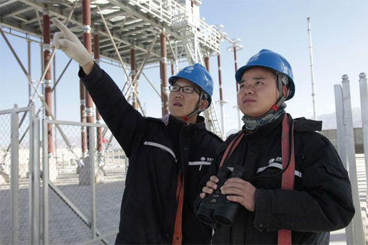
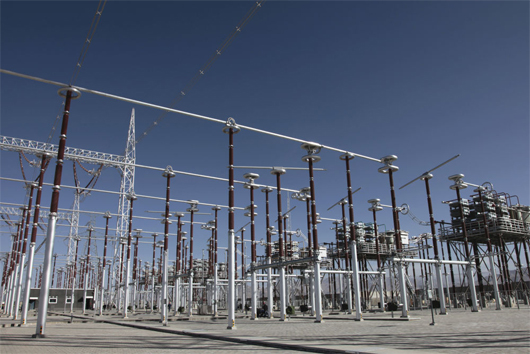
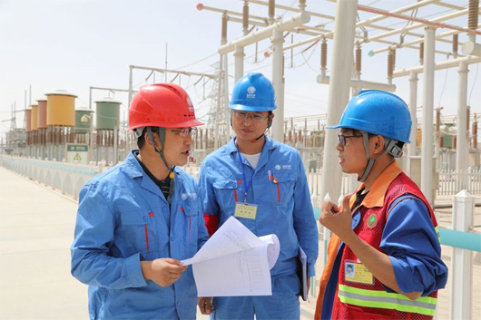

新华社：“电力天路”双向累计输送电量突破90亿千瓦时
发布时间：2019-09-03 大中小
新华社西宁8月23日电（记者骆晓飞）记者从国家电网青海省电力公司获悉，截至8月22日，被誉为“电力天路”的青藏联网工程双向累计输送电量突破90亿千瓦时，达到91.4亿千瓦时。

2018年10月21日，国网青海电力检修公司专业人员在柴达木换流站开展柴拉直流系统设备巡视。（图片由受访单位提供）
被誉为“电力天路”的青藏联网工程东起青海西宁，西至西藏拉萨，全长2530千米，其中，柴达木换流站至拉萨换流站直流段工程平均海拔4000米以上，是世界上海拔最高的直流输电工程和穿越多年冻土里程最长的输电线路。
国网青海电力检修公司柴达木换流站站长李晓明介绍，“电力天路”格尔木至拉萨直流工程自2011年投运以来，通过多次试验不断提升输电系统双向输送能力，输送功率现已由工程投运初期的100兆瓦提升至最高600兆瓦。

2018年10月21日拍摄的柴达木换流变电站串补平台。（图片由受访单位提供）
“今年6月1日起，西藏再次开始向青海反送富余水电，单日最大输送电量达780余万千瓦时。这是工程投运以来柴拉直流系统首度在常态化大功率运行方式下外送西藏富余电能。”李晓明说。
西藏水能资源理论蕴藏量达2.1亿千瓦时，是“西电东送”的重要能源接续基地，但由于西藏电网夏丰冬枯的季节负荷特性，冬季严重缺电、夏季丰水期电力消纳难的矛盾突出。

2018年5月26日，国网青海电力检修公司专业人员加强柴达木换流站作业现场安全管控。（图片由受访单位提供）
李晓明介绍，近年来，在不断强化青藏联网工程运维管理水平的同时，国网青海省电力公司先后通过串补工程、调相机系统等新技术着力提升青藏联网工程线路输送能力，优化电网运行方式，不仅确保了丰水期“藏电外送”、枯水期“送电进藏”，而且提高了西北电网及柴拉直流系统的安全稳定性，缓解了柴达木盆地新能源消纳问题。（完）
信息来源：新华社